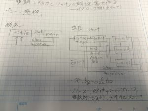

☆シーン遷移図

今回GP2016で制作した課題より、シーン遷移で改良
従来のシーン遷移では、タイトル画面からゲーム画面に飛ぶ仕様(画像,右)
問題:ゲーム自体を終了できない,ゲームの中断が不可能…etc といった問題がある
改良フローでは、タイトル→レベルの選択画面→ゲームという形を取り、また、ゲームからの中断や、ゲーム終了までを図に書き起こした(画像,左)
今回の改良では、ボールの物理処理・ブロック同時消失などのバグから、ゲーム進行に差し支える問題も考慮し、追加を行っていく

従来のScenceとは別に、レベル選択のScenceを用意
そしてScence遷移のパスをmain(ゲームのScence)からselectの変更
using UnityEngine;
using System.Collections;
using UnityEngine.SceneManagement;
public class SceneLoadSelectScript : MonoBehaviour
{
public void SceneLoad()
{
SceneManager.LoadScene(“select”);
}
}
今後はexitとフールプルーフの追加、SE・BGMを追加する予定